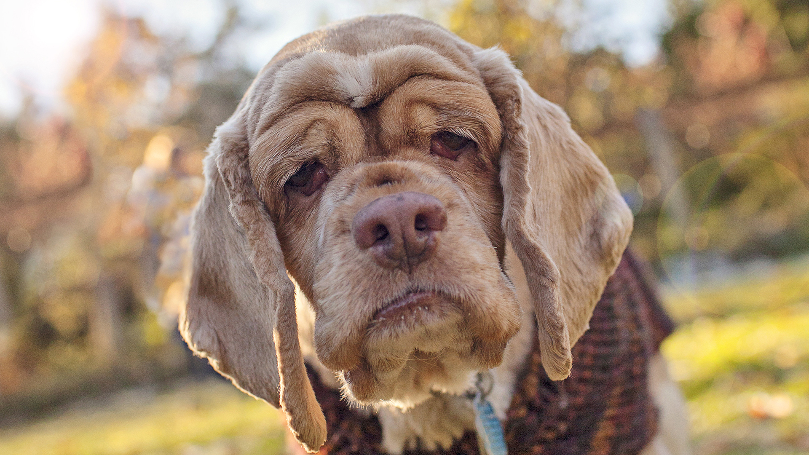

When you’re thinking about picking up a dog from your local shelter, don’t look past the older dogs. They make great pets for a number of reasons.
According to most veterinarians, a dog falls into the “senior” category around age seven. The size of a dog, however, affects this categorization. Smaller dogs mature slower and become seniors later in life than larger dogs. Animal shelters are filled with healthy and active senior dogs that are in need of a home.
1. Senior dogs at shelters need homes just as badly as younger dogs. Many older dogs were once owned and loved by someone. For whatever reason, they were given up and abandoned in a shelter and are in need of a home. Just like puppies and younger adoptable dogs, they make loyal and loving companions.
2. Adopting an older dog may save its life. Many people are quick to adopt puppies and younger dogs, often overlooking dogs over the age of five. Shelters are overcrowded and unfortunately, older dogs are among the first to be euthanized if they aren’t adopted in a timely manner. By adopting a senior dog, you are not only providing it with a better life but are also saving it from being put down.
3. Older dogs are not necessarily “problem dogs” as many tend to think. Senior dogs lose their homes for a variety of reasons, usually having nothing to do with their behavior or temperament, but more due to the fact that their owners are unable to keep them for reasons including: the novelty of owning a dog wearing off, allergies, death of a guardian, a new baby, loss of a job, a move, change in work schedule, and various other lifestyle changes. These dogs need homes just as badly as young adoptees do, and make wonderful household pets.
4. Older dogs usually come trained and understand at least basic commands. Most older dogs are potty-trained and have mastered the basic commands such as “sit,” “stay,” “come,” and “down.” Adopting an already-trained dog will save you a lot of time and energy that you’d normally have to dedicate towards training a young dog.